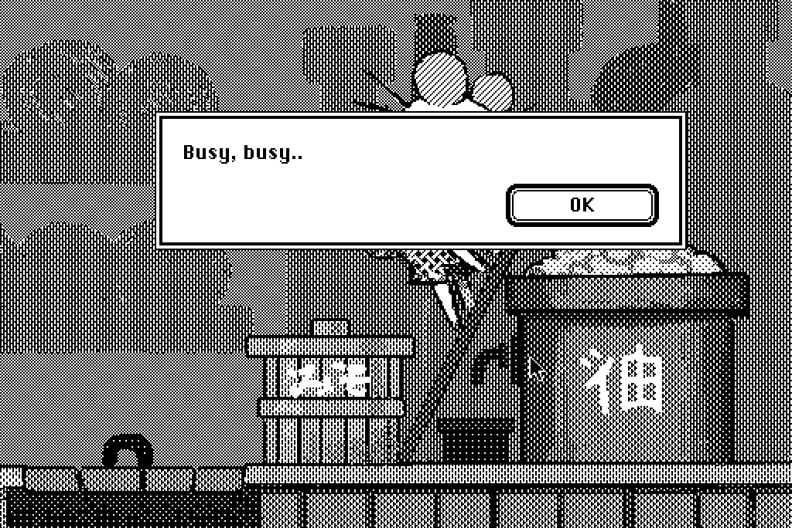

About
About Projects
Projects Books
Books Games
Games Stories
Stories Store
Store Notes
Notes How-to
How-toCatpot is a small cooking game was made by myself and devine over two days for the Merveilles Hyperjam in April 2020.
See the Longplay video(YouTube) of the game.
"Help Cat in the kitchen. Cat is hungry." We wanted to make a point and click cooking game. As the tagline suggests, Cat is hungry, so the goal is to help Cat fetch ingredients from different places to make a full meal which consists of a miso soup, some rice and some tsukemono(pickled vegetables). BUT, you've got to pick ingredients in the right order... while helping residents of the TeaPot house with some of their problems.
This jam was to teach people how to use Hypercard, a software application and development kit for Apple Macintosh and Apple IIGS computers by Bill Atkinson. Find out how to emulate a Macintosh II.

We made this game jam while in Japan, not long before our crossing of the Pacific Ocean. Many participants were in lockdown in their homes because of the pandemic.
Drawing in Hypercard is actually really great? I had a lot of fun with this.